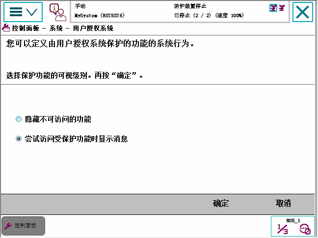

本节介绍了如何定义受用户授权系统(UAS)保护的功能的可视性级别。保护功能可以隐藏或显示，但不能访问。用户授权系统的所有其他管理均可使用RobotStudio完成。请参阅操作员手册 - RobotStudio。
操作
1
在 ABB 菜单上，点击 Control Panel（控制面板），然后点击 FlexPendant。
2
点击 User Authorization System（用户授权系统）。

3
点击选择 UAS 保护功能的可视性级别：
隐藏不可访问的功能或
尝试访问受保护功能时显示消息。
4
单击 OK（确定）。